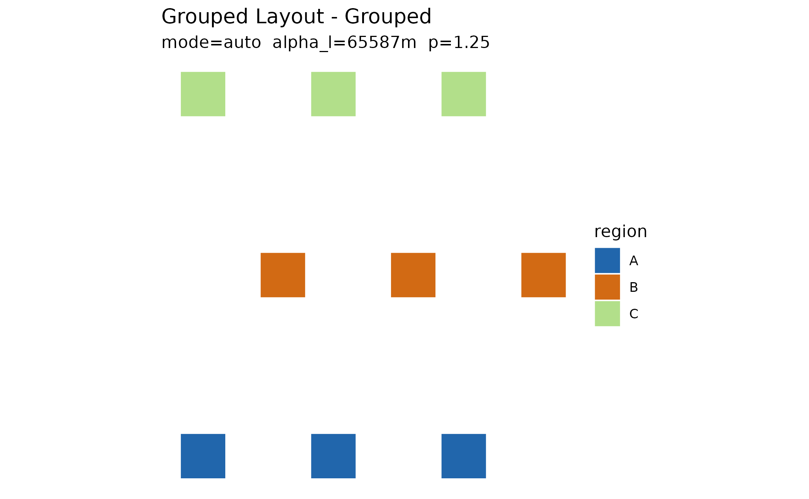

The full explodemap loop is explode, measure,
edit, compare, render:
explode_grouped() -> displacement_magnitudes() -> d_edit() -> compare_layouts() -> as_sf()
(compute) (measure) (compose) (compare) (export)This vignette walks the whole loop on a small synthetic grid. The editorial pass is shown two ways: interactively in the dragmapr editor, and as a scripted nudge in pure R (handy for reproducible tweaks and for CI, where no browser is available).
1. Explode
library(explodemap)
unit_square <- function(x0, y0, size = 40000) {
sf::st_polygon(list(rbind(
c(x0, y0), c(x0 + size, y0), c(x0 + size, y0 + size),
c(x0, y0 + size), c(x0, y0)
)))
}
grid <- expand.grid(col = 0:2, row = 0:2)
regions <- sf::st_sf(
region = rep(c("A", "B", "C"), each = 3),
unit = sprintf("u%02d", seq_len(9)),
geometry = sf::st_sfc(
lapply(seq_len(9), function(i) unit_square(grid$col[i] * 50000, grid$row[i] * 50000)),
crs = 3857
)
)
layout <- explode_grouped(regions, region_col = "region", plot = FALSE, quiet = TRUE)
plot(layout)
2. Measure the layout
Before editing, quantify what the algorithm did.
displacement_magnitudes() gives the per-feature movement in
metres:
3. Hand off to dragmapr
as_dragmapr_state() converts the computed anchors into a
reusable dragmapr_state — the composition object the editor
and the renderers share:
state <- as_dragmapr_state(layout)
state
#> $level
#> [1] "region"
#>
#> $region_offsets
#> region dx_m dy_m
#> 1 A 0 0
#> 2 B 0 0
#> 3 C 0 0
#>
#> $label_offsets
#> [1] label_id region dx_m dy_m
#> <0 rows> (or 0-length row.names)
#>
#> $expanded_groups
#> character(0)
#>
#> $view
#> NULL
#>
#> $version
#> [1] 0
#>
#> $crs
#> [1] 3857
#>
#> $geometry_id
#> [1] "Grouped Layout"
#>
#> $selected_feature
#> NULL
#>
#> $styles
#> [1] region fill stroke stroke_width opacity
#> [6] label_visible highlight
#> <0 rows> (or 0-length row.names)
#>
#> $region_col
#> [1] "region"
#>
#> $label_id_col
#> [1] "label_id"
#>
#> $binding
#> $binding$region_col
#> [1] "region"
#>
#> $binding$label_id_col
#> [1] "label_id"
#>
#>
#> $schema_version
#> [1] "1.2.0"
#>
#> $package_version
#> [1] "0.3.1"
#>
#> attr(,"class")
#> [1] "dragmapr_state"4. Edit
Open the editor seeded with the computed layout. In Shiny, capture
each edit back into a state with
dragmapr::d_widget_state():
dragmapr::d_edit(layout, state = state)For a reproducible tweak — or anywhere without a browser — apply the same kind of edit as data. Here region “B” is nudged 50 km east:
nudge <- data.frame(
region = "B",
dx_m = 50000,
dy_m = 0
)
edited <- update_exploded_layout(layout, nudge, update_plots = FALSE)5. Compare before and after
compare_layouts() summarises how the edit changed
per-feature displacement:
cmp <- compare_layouts(layout, edited)
cmp$summary
#> layout total mean max
#> 1 before 948985.1 105442.8 136383.2
#> 2 after 1098985.1 122109.5 186383.2
head(cmp$per_feature)
#> distance_before distance_after delta
#> 1 128751.916 128751.92 0
#> 2 110794.415 110794.42 0
#> 3 128751.916 128751.92 0
#> 4 5209.225 55209.22 50000
#> 5 70796.215 120796.22 50000
#> 6 136383.206 186383.21 500006. Render and export
Render the edited composition statically (writes a PNG next to this document’s working directory when run interactively):
dragmapr::render_dragged_map(
as_sf(edited, which = "grouped"),
region_col = "region",
state = state,
file = "edited.png"
)And convert the final layout back to plain sf for
downstream GIS work — file export, spatial joins, or further
sf analysis:
final_sf <- as_sf(edited)
sf::st_write(final_sf, file.path(tempdir(), "edited.gpkg"), quiet = TRUE)
list.files(tempdir(), pattern = "edited")
#> [1] "edited.gpkg"The loop closes: final_sf is an ordinary sf
data frame, so anything that reads simple features can pick up where the
editor left off.